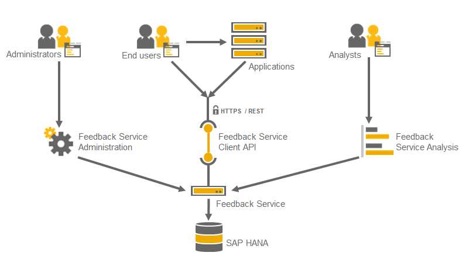

The SAP Cloud Platform Feedback Service (Feedback Service) provides developers, customers, and partners with the option to collect end user feedback for their applications. In addition, the Feedback Service provides predefined analytics on the collected feedback data - feedback rating distribution and detailed text analysis of user sentiment (positive, negative, or neutral).
The Feedback Service is a beta functionality that is available on the SAP Cloud Platform trial landscape for developer accounts.
To use the Feedback Service, you must enable it from the SAP Cloud Platform cockpit for your account. For more information, see Accessing Services in the Related Information section.
The Feedback Service has three components:
The Analysis UI leverages the SAP HANA analytics and text analysis capabilities. Feedback data is stored in the SAP HANA DB.
As an account owner, the roles are automatically assigned to your user once you have enabled the Feedback Service. If you want to allow other SAP ID users to access the Analysis and Administration UIs, you need to assign the roles manually. For more information about assigning the required roles, see Consuming the Feedback Service.
In the Administration UI, the administrator adds the applications for which feedback is to be collected. As a result, the developer can use the client API to consume the Feedback Service.
Once the Feedback Service is consumed by the application and feedback data is collected, the feedback analyst can explore feedback text analysis in the Analysis UI. As a result, a developer can use end user feedback to improve the performance and appearance of the specific application.
The Feedback Service is operated by SAP Cloud Platform and leverages the in-memory technology of the SAP HANA DB.
